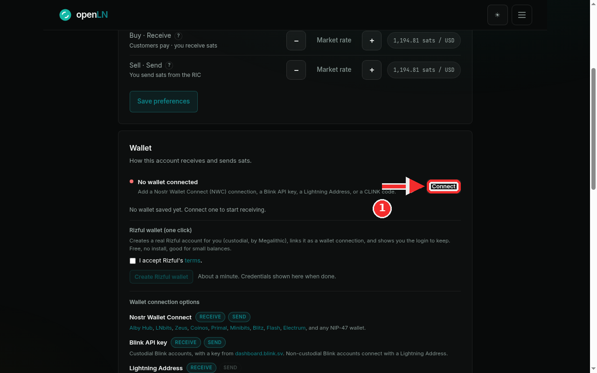
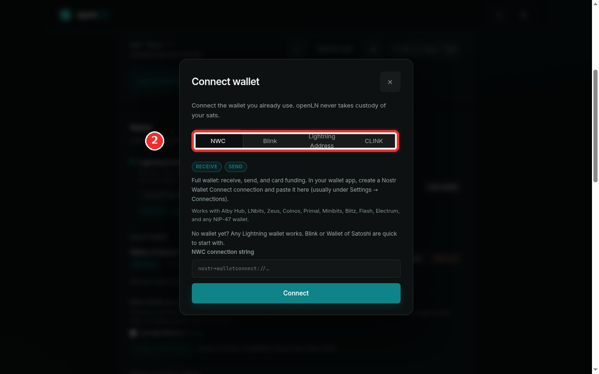

How to connect your first wallet
openLN needs one wallet connection before it can take a payment, because that wallet is where your sats land. This page shows where the connection starts and explains the four kinds of connection, so you can pick the one that matches the wallet you already use. Each kind has a per-wallet guide with its own screenshots, linked below. The whole thing takes about two minutes.
- You are signed in to your openLN account (any device, phone or computer).
- You have your wallet app at hand, or at least a decision on which of the four kinds you will use. You only need one to start.
- Nothing is charged during setup and no funds move. You are pasting a value that lets openLN receive from the wallet you already control, so you stay in charge of your sats.
- Never share the value you paste. NWC strings, Blink API keys and CLINK codes are secrets: they let openLN use your wallet. Do not paste them into a chat or a support message, and do not include them in a screenshot.
Open the Wallet card and press Connect
Go to Settings and find the Wallet card, the one that starts with "How this account receives and sends sats". On a fresh account it shows a red dot next to the line "No wallet connected", with the hint "No wallet saved yet. Connect one to start receiving." Press the Connect button on the right. Once at least one wallet is saved, the same button reads Add wallet instead. The same dialog also opens from the Connect wallet button on the wallet home page, and from the point of sale banner when it says "Connect a wallet to start selling".

Pick a tab in the Connect wallet dialog
The dialog offers four kinds of connections: NWC, Blink, Lightning Address and CLINK. Read the chips under each tab (they show whether that kind can receive, send, or both) and the short line that names the wallets it works with. Click the field and paste the value from your wallet app; if openLN recognizes what you pasted, a nostr+walletconnect: string, a Blink key, an address or a CLINK code, it selects the matching tab for you. Press Connect when you are ready. openLN checks the connection before anything is saved: a balance probe for NWC, the Blink API for a Blink key, a real 1 sat invoice probe for a Lightning Address, and a small invoice request for a CLINK code. If the check fails, nothing is saved and the reason appears under the form.

- NWC (Nostr Wallet Connect). A full wallet: receive and send, plus balance reads and card funding. Works with any NIP-47 wallet. Guide: connect a Nostr Wallet Connect wallet.
- Blink. Your Blink account, connected with an API key from the Blink dashboard. Receive and send. Guide: connect a Blink wallet.
- Lightning Address. Receive-only. Works with any Lightning Address, such as a Blink or Wallet of Satoshi address. Guide: connect a Wallet of Satoshi wallet.
- CLINK. A code for Lightning.Pub and ShockWallet, pasted into the same dialog. Guide: connect a CLINK wallet.
- Your first wallet becomes the default. It is used for everything that does not pick its own wallet. Later connections are added beside it under Saved wallets, and nothing replaces the default on its own.
- Nothing is saved on failure. If the check does not pass, the wallet is not saved: an unrecognized value is refused, an unreadable wallet answers "nothing was changed", and a wallet you already connected answers "This wallet is already connected." Fix what the message points at and try again.
- Your keys, your sats. openLN never takes custody of your sats. You can rename a saved wallet, make it the default, or remove it later; see the manage wallets guide.